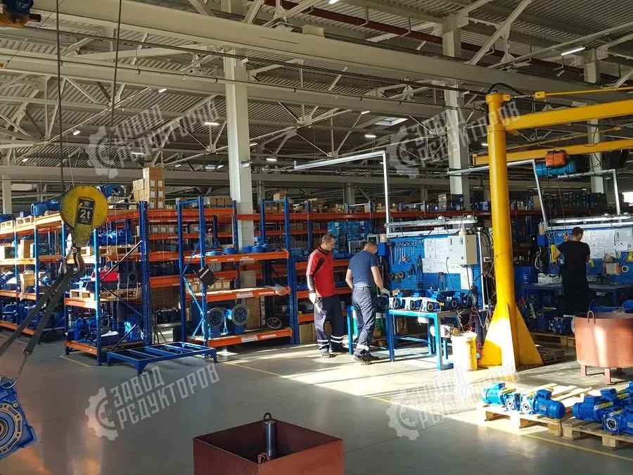

Мотор-редукторы EVL закрывают большинство приводных задач: соосные, цилиндрические, плоские, цилиндро-конические и червячные исполнения. Подбирают их по тем же параметрам, что и любой привод — моменту, оборотам, передаточному числу и монтажу, а для замены импорта дополнительно сверяют габариты с SEW, NORD и Motovario. Разберём серии EVL, расшифровку обозначений и порядок подбора.
Линейка EVL различается по типу передачи и расположению валов. Тип выбирают под компоновку привода и требования к КПД и самоторможению:

В маркировке EVL последовательно зашифрованы тип передачи, типоразмер корпуса, передаточное число, мощность и обороты двигателя и монтажное исполнение. Тип задаёт компоновку, типоразмер — габарит и номинальный момент, передаточное число — выходные обороты. По этой связке однозначно определяется конкретное исполнение. Подробный разбор обозначений — в статье о расшифровке маркировки.
Подбор EVL начинают с исходных данных механизма: крутящего момента на выходном валу (или мощности двигателя), требуемых выходных оборотов, режима работы и монтажного исполнения. По входным и выходным оборотам определяют передаточное число i = nвх / nвых, по моменту с сервис-фактором — типоразмер, по компоновке — тип передачи.
Если задана мощность и обороты, момент на выходе считают по формуле T = 9550 · P · η / n2, где η — КПД (для соосно-цилиндрических и цилиндрических EVL ~0,96–0,98, для червячных ~0,7–0,9). Рабочий момент умножают на сервис-фактор под режим работы и берут типоразмер с номиналом не ниже расчётного. Затем проверяют консольную нагрузку на вал.

EVL часто ставят вместо импортных мотор-редукторов. Соответствие подбирают по типу передачи, моменту, передаточному числу и присоединительным размерам. Цена импортных оригиналов сообщается по запросу, а отечественный аналог EVL подбирается как габаритная замена. Соответствие серий — в таблице ниже и в статье об аналогах SEW, NORD и Bonfiglioli.
Финальный шаг при замене импорта — габаритная совместимость. Мотор-редуктор EVL должен встать на штатные крепления: совпасть по фланцу, диаметру и длине вала, расположению лап и отверстий. Если габариты отличаются, изготавливают переходный фланец или спецвал. Тогда замена идёт без переделки рамы оборудования.
Чтобы быстро сориентироваться при замене импортного привода, держите перед глазами таблицу соответствия типов EVL сериям SEW, NORD и Motovario. Она показывает, какое исполнение EVL ближе к конкретной импортной серии по компоновке.
| Соосно-цилиндрический EVL | SEW R · NORD SK · Motovario H / HW |
|---|---|
| Цилиндро-конический EVL | SEW K · NORD SK..K · Motovario B |
| Плоскопараллельный EVL | SEW F · NORD SK..F (полый вал) |
| Червячный EVL | SEW S · NORD SK..W · NMRV Motovario |
| Цилиндрический горизонтальный | NORD SK (параллельные валы) |
| Цена импортного оригинала | по запросу; аналог EVL — габаритная замена |
Чтобы подбор прошёл без уточнений, соберите полный набор исходных данных. Таблица ниже показывает, что именно нужно и на какое решение влияет каждый параметр при выборе исполнения EVL.
| Момент T или мощность P | задаёт типоразмер EVL; Н·м или кВт |
|---|---|
| Выходные обороты n2 | требуемая скорость рабочего органа |
| Передаточное число i | i = n1 / n2; задаёт выходные обороты |
| Режим / сервис-фактор | характер нагрузки и пуски; запас по моменту |
| Тип передачи | соосный, цилиндрический, конический, червячный, плоский |
| Монтаж и присоединения | фланец, лапы, концы валов, исполнение |
Подбор мотор-редуктора EVL — это выбор типа передачи под компоновку, типоразмера под момент с сервис-фактором и проверка присоединительных размеров, а при замене импорта — сверка габаритов с SEW, NORD или Motovario. Откройте калькулятор подбора или пришлите шильд импортного привода — подберём исполнение EVL и пришлём КП.
Тип исполнения EVL задаёт расположение валов и требования к КПД и самоторможению. Для длительной работы под высокой нагрузкой с минимальными потерями берут соосно-цилиндрическое или цилиндрическое исполнение — у них высокий КПД и большой ресурс. Когда вход и выход должны быть под углом 90° при большом моменте, выбирают цилиндро-коническое исполнение. Если важна малая монтажная высота и насадка на вал рабочего органа, подойдёт плоскопараллельный мотор-редуктор с полым валом.
Червячное исполнение EVL выбирают там, где нужна компактность, угол 90° и эффект самоторможения — например, в подъёмных и удерживающих механизмах, где недопустим обратный ход под нагрузкой. При этом у червячной передачи ниже КПД, поэтому при той же выходной мощности двигатель будет мощнее, чем у цилиндрического аналога. Окончательный выбор типа всегда увязывают с компоновкой привода, режимом работы и условиями эксплуатации, а не только с габаритом корпуса.
Чтобы выполнить подбор мотор-редуктора EVL, определите тип передачи под компоновку, рассчитайте момент с сервис-фактором и передаточное число, выберите типоразмер и сверьте присоединительные размеры. Для замены импорта дополнительно сопоставляют исполнение EVL с сериями SEW, NORD и Motovario.
Мотор-редукторы EVL выпускаются в нескольких типах исполнения, и подбор всегда начинается с компоновки привода: соосный для экономии длины, цилиндрический для длительной нагрузки, цилиндро-конический для угла 90°, плоский с полым валом для насадки, червячный для самоторможения. Внутри выбранного типа типоразмер подбирают по расчётному моменту, который получают из мощности и оборотов с учётом КПД передачи и сервис-фактора режима.
При замене импортного привода к силовому подбору добавляется габаритная совместимость. Соосные EVL сопоставляют с SEW R и NORD SK, конические — с SEW K, плоские — с SEW F, червячные — с SEW S, NORD SK..W и NMRV Motovario. Совпадение фланца, концов валов и расположения лап решает, встанет ли аналог на штатное место без переделки рамы; при расхождении изготавливают переходный фланец или спецвал. Цену импортных оригиналов сообщают по запросу, а отечественный EVL подбирают как габаритную замену.
| Тип EVL | Когда применяют |
|---|---|
| Соосно-цилиндрический | компактность по длине, высокий КПД |
| Цилиндрический горизонтальный | длительная работа под нагрузкой |
| Плоскопараллельный | малая высота, насадка на полый вал |
| Цилиндро-конический | валы под 90°, большой момент |
| Червячный | самоторможение, угол 90°, компактность |
| EVL | Импортный аналог |
|---|---|
| Соосный | SEW R · NORD SK · Motovario H |
| Конический | SEW K · NORD SK..K |
| Плоский | SEW F · NORD SK..F |
| Червячный | SEW S · NORD SK..W · NMRV |
| Цена импорта | по запросу, аналог — габаритная замена |
Подобрать исполнение EVL можно через калькулятор подбора редуктора, в разделе каталога EVL или на странице червячных редукторов. Пришлите шильд импортного привода — подберём аналог EVL и пришлём предложение.
Пришлите шильд импортного привода или параметры — подберём исполнение EVL и пришлём КП за 15 минут.
Получить расчёт